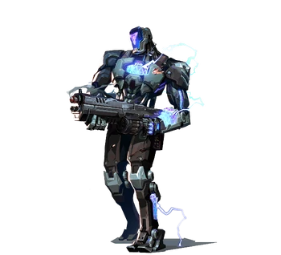

| Un robot de un futuro alternativo, KAY/O fue creado por los humanos de esa época para luchar contra los radiantes con los que estaban en guerra. Usando el poder de la radianita polarizada, KAY/O demostró ser efectivo para apagar las habilidades de los radiantes, haciéndolos más fáciles de eliminar. La radiante Reyna era particularmente importante para KAY/O por sus acciones contra la humanidad, y KAY/O finalmente pudo eliminarla. Sin embargo, en este punto los humanos ya habían sufrido graves pérdidas.
Más tarde, KAY/O viajaría siglos atrás en el tiempo hasta la actualidad, llegando a una isla cerca del Caribe, y pronto sería reclutado como agente del Protocolo VALORANT. Ahora lucha como agente en una época en la que hay armonía entre los humanos y los radiantes, junto con versiones alternativas de los humanos con los que sirvió y los radiantes contra los que luchó. Sin embargo, las cicatrices de la guerra anterior de KAY/O permanecen, de las pérdidas que sufrió y del dolor infligido por las versiones de los mismos radiantes con los que ahora se encuentra trabajando. |
 |